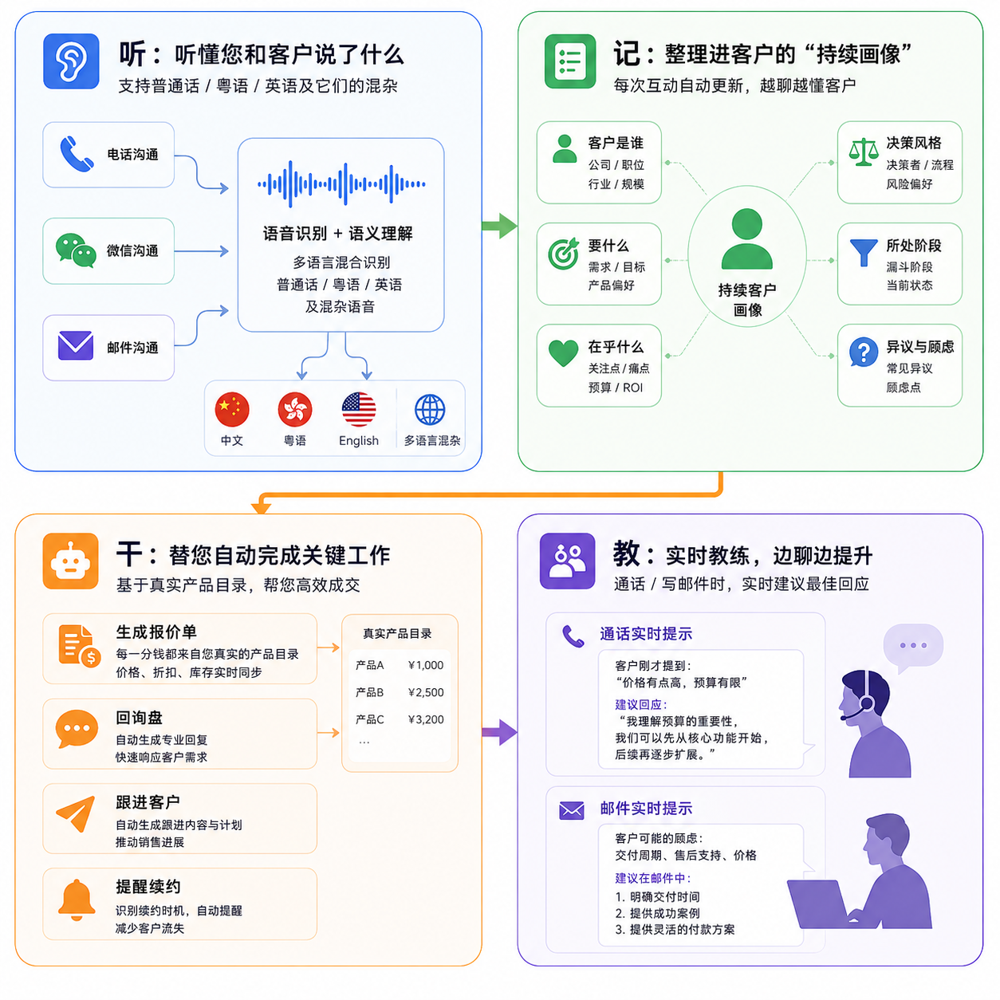
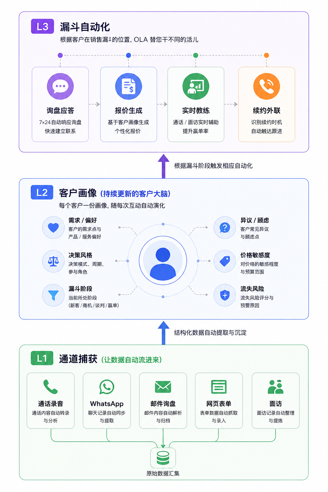
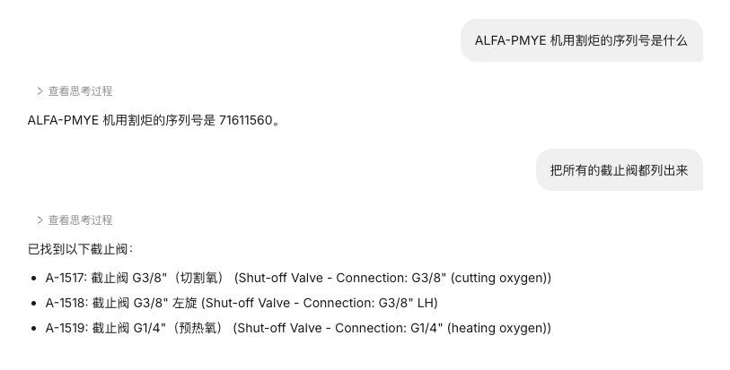
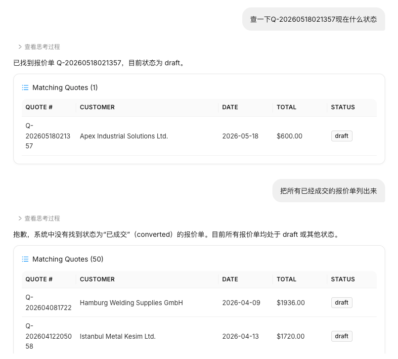

关于本指南
本指南面向 OLA 的日常使用者(销售、销售经理、管理员)和决策者(老板、负责人)。无论您是第一次接触 OLA,还是已经在用、想深入了解更多功能,这本指南都能帮到您。
1. 前言
2. 智能助手 AskOLA
3. 通道捕获
4. 管理员与老板视角
5. 故障与求助
OLA 是一个帮您把跨境 B2B 销售订单"从询盘到成交、再到续约"全流程跑完的 AI 助手。

Ola和 Salesforce、HubSpot、SAP、纷享销客、销售易, Gong、Fireflies有什么不一样?
| 问题 | OLA |
|---|---|
| 手动录入，数据残缺 | 自动从通话/邮件/WhatsApp 抓取 |
| 客户资料是通话索引，新人难接手 | 持续客户画像，30 秒上手 |
| 只给洞察，报价还得自己写 | 直接从真实目录生成报价单，一键发送 |
| 只支持英文 | 普通话 / 粤语 / 英语混杂原生支持 |
| 多工具拼凑，成本叠加 | 一个 agent 跑通询盘到续约，成本约十分之一 |
| AI 报价会编数字，销售不敢用 | 确定性报价，每个数字可追溯，零幻觉 |
OLA 是由三层能力组成的完整系统

┌─────────────────────────────────────────────────────┐
│ L1 · 通道捕获(让数据自动流进来) │
│ ┌────────┬────────┬──────────┬──────────┬──────┐ │
│ │ 通话录音│ WhatsApp│ 邮件询盘 │ 网页表单 │ 面访 │ │
│ └────────┴────────┴──────────┴──────────┴──────┘ │
└─────────────────────────────────────────────────────┘
↓
┌─────────────────────────────────────────────────────┐
│ L2 · 客户画像(持续更新的客户大脑) │
│ 每个客户一份画像,随每次互动自动演化 │
│ · 需求/偏好 · 异议/顾虑 · 价格敏感度 │
│ · 决策风格 · 漏斗阶段 · 流失风险 │
└─────────────────────────────────────────────────────┘
↓
┌─────────────────────────────────────────────────────┐
│ L3 · 执行自动化 │
│ 根据客户在销售漏斗的位置,OLA 替您干不同的活儿 │
│ ┌──────────┬──────────┬──────────┬──────────┐ │
│ │ 询盘应答 │ 报价生成 │ 实时教练 │ 续约外联 │ │
│ └──────────┴──────────┴──────────┴──────────┘ │
└─────────────────────────────────────────────────────┘AskOLA 是您与这三层交互的入口,本指南从这里开始。
体验账号：demo@ola.ai
体验账号密码：OLADemo@2026
/插入视频
AskOLA 是您日常和 OLA 打交道的主要入口。无论您想查信息、改资料、新建记录,都可以在这里用一句话搞定,不用点菜单、不用学操作。
接下来三章,我们用最朴素的方式教您:
这一章教您如何用 AskOLA 快速查到您需要的客户资料、商品信息、报价单,以及更深层的客户画像和通话记录。
登录 OLA 系统后,在页面右下角会看到一个对话框图标,点击它,AskOLA 聊天窗口就打开了。
您可以在系统任意页面随时打开它,不影响您正在做的其他操作。
🟡 路线图 (v4): AskOLA 将支持桌面快捷键(Ctrl+K / Cmd+K)、浏览器扩展、以及移动端独立 App,让您在任何场景下都能 30 秒内问到答案。
快速查询客户的联系方式、跟进记录、历史成交,或按地区/行业/时间筛选客户列表。
查一下 XX 公司的联系人和电话
把所有在广东的客户列出来
哪些客户超过一个月没有跟进了?
历史订单超过 50 万的客户有哪些?
🟡 把对价格不敏感、但对交货期很在意的客户列出来
🟡 列出最近三个月有过明确购买意向但还没成交的客户
快速查询产品的价格、库存、规格,或按类别、价格区间筛选产品目录。
查一下无线温度传感器的价格和库存
查一下货号 WTS-2024 的详细信息
有没有单价在 200 到 300 元之间的产品?
哪些产品库存不足 100 件了?
把"工业传感器"这个类别下所有产品都列出来
🔵 客户要做户外环境监测,海拔三千米左右,我有哪些产品可以推荐?

查询某份报价单的金额、当前状态、谈判进展,或批量筛选特定时间段/状态的报价单。
查一下最近给 XX 公司发的报价单
查一下编号 2025-0312 那份报价单现在是什么状态
上个月发出去、但客户还没确认的报价单有哪些?
把所有已经成交的报价单列出来
含有"无线温度传感器"这个产品的报价单有几份?
🟡 哪些报价单客户已经回复过两次以上、但还没确认?
🟡 哪些报价单超过 7 天没动静,可以主动跟进?

这一章教您如何通过 AskOLA 直接修改系统里已有的记录,不用进入表单页面一个字段一个字段地找。
⚠️ 重要提醒: 每次修改前,系统都会把改动内容展示给您确认一遍,您点"确认"之后修改才会生效。所有修改都有操作记录,可以事后查看是谁在什么时候改的。
第一步: 在 AskOLA 对话框里,用自然语言告诉系统您想改什么。
把 XX 公司的联系电话改成 138XXXXXXXX
第二步: 系统找到这条客户记录,显示当前信息,并问您是否确认修改:
已找到客户"XX 公司",当前联系电话为:136XXXXXXXX
您要修改为:138XXXXXXXX
确认修改吗?【是】 【否】
第三步: 点击"是",修改立即生效。系统同时记录:操作人、修改时间、改了哪个字段、改成了什么。
改联系人邮箱:
把 XX 公司的邮箱改成 abc@example.com
改跟进状态:
把 XX 公司的状态改成"已成交"
加备注:
给 XX 公司加一条备注:客户要求每次发货前提前三天通知
改客户所在地区:
把 XX 公司的地区改成"华东"
第一步: 告诉系统您要改哪款产品的什么内容。
把无线温度传感器的单价从 68 元改成 75 元
第二步: 系统显示当前信息并请您确认:
已找到"无线温度传感器",当前单价:68 元
您要修改为:75 元
⚠️ 提示:此修改将影响所有未发送的新报价单;已发送的报价单不受影响。
确认修改吗?【是】 【否】
第三步: 点击"是",修改生效。
改库存数量:
无线温度传感器刚到货了,库存更新为 500 件
修改产品描述:
给无线温度传感器的说明里加一句:适用工作温度 -40°C 至 125°C
下架产品:
把"旧款压力传感器"设为停用,这款已经不卖了
修改阶梯价格:
把无线温度传感器改成阶梯定价:不足 100 件单价 75 元,100 件及以上单价 68 元
💡 提示: 如果阶梯定价条件比较复杂,直接输入您的定价规则,系统会引导您一步步确认每个档位。
第一步: 指定要修改哪份报价单,以及要改什么。
把给 XX 公司最新那份报价单里,无线温度传感器的数量从 200 件改成 350 件
第二步: 系统调出报价单,显示修改前和修改后的对比,请您确认:
报价单编号:2025-0312,客户:XX 公司
无线温度传感器:200 件 → 350 件
单价根据阶梯定价规则,从 68 元自动调整为 65 元(达到 300 件及以上档位)
金额变化:13,600 元 → 22,750 元
确认修改吗?【是】 【否】
第三步: 点击"是",系统保存新版本,同时保留修改前的历史版本。
加折扣:
给 XX 公司最新的报价单打九折
改付款方式:
把 2025-0298 这份报价单的付款条件改成:30% 预付,货到后付剩余 70%
延长有效期:
把 2025-0312 这份报价单的有效期延长到 6 月 30 日
新增一个产品:
在给 XX 公司的报价单里加上"工业压力传感器"50 件
删除一个产品:
把 2025-0312 这份报价单里的"旧款压力传感器"去掉
这一章教您如何通过 AskOLA 新建客户档案、新增商品、新建报价单,不用手动填写表单,直接跟系统说就行。
方式一:一次性说清楚
帮我录入一个新客户:XX 贸易有限公司,联系人李总,手机 138XXXXXXXX,做电子元器件批发,在上海
系统收到后,会显示录入预览,您确认无误后点"保存",客户档案就建好了。
方式二:让系统引导您填
帮我新建一个客户档案
系统会一步步问您:客户名称是什么?联系人叫什么?怎么联系?……您一步步回答就行。
方式三:从邮件或消息里自动提取(推荐)
如果客户发来了一封自我介绍的邮件,或者在微信 / 邮件里留了联系方式,您可以把那段文字直接复制粘贴到对话框,然后输入:
从这段信息里帮我提取客户资料并建档
系统会自动识别里面的公司名、联系人、电话、邮箱等信息,生成一份草稿让您确认。
🟡 方式四 (v4):从名片照片提取
直接拍一张名片照片,上传后输入:
这张名片帮我建档
系统会自动识别名片上的所有信息,生成草稿。
🔵 方式五(长期愿景):从展会邮件批量建档
展会结束后,把您所有收到的询盘邮件转发到一个专属地址,OLA 自动逐封识别、批量建档、自动归类,并把这些新客户加入相应的跟进序列。
一次性录入:
新增一款产品:无线温度传感器,货号 WTS-2024,单价 68 元,库存 500 件,属于工业传感器类别
让系统引导:
帮我录入一款新产品
系统会逐项问您需要填的信息。
批量录入多款产品:
把产品信息整理成一个列表(比如从表格里复制出来),粘贴到对话框,告诉系统:
帮我把下面这些产品都录入系统:
[粘贴产品列表]
系统会逐条识别并请您确认,每条确认后再进行下一条,避免出错。
🟡 从供应商报价单 PDF 导入 (v4):
直接把供应商发来的 PDF 报价单拖入 AskOLA:
帮我把这份供应商报价单里的产品都加进我的产品目录
系统自动识别 PDF 里的产品信息,生成草稿目录,您只需要补充自己的售价和分类。
一次性说清楚(推荐):
给 XX 公司做一份报价:无线温度传感器 200 件、工业压力传感器 100 件,付款方式电汇,有效期 30 天
系统收到后,自动从产品目录里取出价格,生成一份报价单草稿,并显示给您预览:
已为 XX 公司生成报价单草稿:
· 无线温度传感器 × 200 件,单价 68 元,小计 13,600 元
· 工业压力传感器 × 100 件,单价 120 元,小计 12,000 元
· 合计:25,600 元
· 付款方式:电汇
· 有效期:30 天
确认保存吗?【保存草稿】 【保存并发送】
让系统引导:
帮我给 XX 公司做一份报价
系统会一步步问您要报哪些产品、数量多少。
基于历史报价复制:
复制上次给 XX 公司的报价单,产品不变,数量全部改成两倍
系统调出上次的报价单,按您的要求调整后展示给您确认。
AskOLA 生成报价单时,所有价格都来自您自己录入的产品目录,系统不会自己估算或猜测价格。这是 OLA 的核心承诺——确定性报价(Deterministic Quoting)。
具体来说:
如果某款产品还没有设定售价,系统会直接提示:
⚠️ "无线温度传感器(WTS-2024-Pro)"在您的产品目录里没有售价,请先去产品目录补充售价,再生成报价单。
为什么这件事重要?
很多 AI 销售工具会"编"价格——表面上能快速生成报价,但销售不敢直接发给客户,因为不知道哪个数字是 AI 想象的。OLA 的设计哲学是:AI 帮您写表达,数据全部来自真实目录。您可以放心地一键发送。
报价单默认保存为草稿,不会自动发送。您可以:
到目前为止,我们讲的都是您"主动"去问、去改、去录入信息。但 OLA 真正的力量在于:信息会自己流进来。
L1 通道捕获层是 OLA 的眼睛和耳朵。不管您和客户在哪个渠道沟通——电话、WhatsApp、邮件、网页表单、面对面会议——OLA 都能自动把这些互动捕获进来,变成结构化的数据,进一步喂给 L2 客户画像。
这一部分讲:
这一章教您如何把与客户的通话录音上传到 OLA 系统,让 OLA 帮您自动整理通话内容、找出值得改进的地方,帮助您和团队不断提升谈单能力。
做销售,很多时候跟客户打完电话,转头就忘了说了什么。或者明明觉得聊得不错,但客户最后没下单,也说不清楚哪里出了问题。
OLA 的录音分析功能就是为了解决这个问题。
您只需要把通话录音上传进来,系统会帮您:
举个例子:
您打完一个客户电话,上传录音后,系统告诉您:"客户在第 3 分钟提到对交货期有疑虑,但您当时直接跳过去继续介绍产品了,建议下次先正面回应交货期问题,再继续推进。"——这就是系统帮您做的事。
上传录音前,请确认以下几点:
.mp3、.m4a、.wav、.aac(微信语音导出的文件也支持)💡 提示: 大多数手机自带录音功能,通话时可以同步录音。如果您的手机不支持,可以咨询管理员推荐合适的录音工具。
第一步: 打开 AskOLA 对话框,输入:
我要上传一段通话录音
第二步: 系统弹出文件上传窗口,点击"选择文件",找到您手机或电脑里的录音文件,点击上传。
第三步: 系统询问这段录音是跟哪个客户的通话:
请问这段录音是与哪位客户的通话?(请输入客户名称)
输入客户名称后,系统自动将这段录音与该客户档案关联,方便以后查找。
第四步: 上传完成后,系统显示:
录音已上传成功,正在转写和分析,预计需要 3 到 5 分钟,完成后会通知您。
打开某个客户的档案页,找到"通话记录"标签,点击"上传录音"按钮,选择文件上传即可。上传后录音自动归属于该客户,无需再次确认。
录音处理完成后,系统会生成一份通话分析报告,包含以下几个部分:
系统把整段录音转成文字后,提炼出一段 200 字左右的摘要,告诉您这次通话主要聊了什么,方便您快速回顾。
示例:
本次通话时长 12 分 34 秒。客户主要询问了无线温度传感器的交货周期和最低起订量,对价格表示接受,但希望能将交货期从 30 天缩短至 20 天。通话结束时客户表示需要内部确认后再回复。
系统自动从通话中识别并整理出客户提到的重要信息:
| 类别 | 客户说的内容 |
|---|---|
| 需要的产品 | 无线温度传感器,规格 XX |
| 数量需求 | 首批 300 件,后续视情况追加 |
| 价格接受情况 | 对现有报价无异议 |
| 主要顾虑 | 交货期能否缩短到 20 天以内 |
| 下一步行动 | 等客户内部确认,预计三天内回复 |
这些信息可以一键同步到该客户的档案备注里,不用手动再记一遍。
系统标注出这次通话里做得好的地方,帮您知道哪些方式是有效的,值得继续保持。
示例:
✅ 您在介绍产品时主动提到了竞品的对比优势,这对客户的判断很有帮助。
✅ 您在客户提出顾虑后,没有急于反驳,而是先表示理解再给出解释,节奏把握得当。
系统结合公司积累的销售经验,指出这次通话中可以做得更好的地方,并给出具体的改进方向。
示例:
⚠️ 客户在第 4 分 12 秒提到"交货期能不能再快一点",您当时的回应是"我去问一下",但没有给出一个明确的时间节点。建议下次碰到类似情况,先给一个初步答复(比如"最快可以做到 25 天,我去再确认一下能否缩短到 20 天"),让客户感觉到您在积极推进,而不是不确定。
⚠️ 通话结束前,您没有明确约定下一次跟进的时间。建议结束通话前主动说:"那我后天下午联系您确认一下内部情况,方便吗?"——这样可以有效减少客户拖延回复的情况。
方式一:通过 AskOLA 查询
帮我查一下上周和 XX 公司的通话分析报告
系统显示该次通话的完整分析报告,您可以选择查看全文或只看改进建议。
方式二:在客户档案里查看
打开某个客户的档案,点击"通话记录"标签,可以看到与该客户的所有历史录音,点击任意一条可以查看详细分析报告。
方式三:查看团队整体情况(仅限管理员)
管理员可以在"团队数据"页面,查看所有销售人员的通话记录和分析汇总,了解团队整体的通话质量和常见的改进点。详见第十二章。
前面四个 Part 主要面向销售人员的日常使用。这一部分专门讲给销售经理、老板、IT 管理员看——OLA 如何在团队和公司层面发挥更大价值。
三章:
老板和销售经理需要的不是"翻 100 个客户档案",而是一个驾驶舱——一眼看到整个团队的健康状况。
OLA 团队看板(管理员权限可访问)包含以下视图:
本月销售漏斗
─────────────────────────
线索阶段 | 152 个客户 | $1.2M 潜在价值
初次接触 | 87 个客户 | $890K
在谈中 | 43 个客户 | $620K
已报价 | 21 个客户 | $410K
待确认 | 12 个客户 | $280K
已成交 | 8 个客户 | $190K
─────────────────────────
转化率(线索→成交):5.3%(行业基准 4.2%)
平均成交周期:42 天🔴 高风险客户(5 个,潜在损失 $120K)
🟡 中风险客户(14 个,潜在损失 $240K)
🟢 扩单机会(23 个,潜在增量 $180K)每位销售的:
本周需要您重点关注:
1. XX 公司(销售:小李) — 已 60 天无互动,历史成交 $80K,流失风险高
2. YY 公司(销售:小王) — 报价单已发 14 天无客户响应,建议主动跟进
3. ZZ 公司(销售:小张) — 客户上次通话情绪明显下降,建议销售经理介入老板不需要点菜单,直接问 AskOLA:
这个月成交额是多少?跟上个月比怎么样?
哪个销售人员业绩最好?他/她做对了什么?
我们 Top 5 客户最近怎么样?有风险吗?
哪些客户最近三个月没有任何互动了?为什么?
给我看一下这个季度的"成交"vs"丢单"对比,主要原因是什么?
换一种说法再试一次。比如查不到,可以换用客户的全称,或者换成货号来查。如果还是不行,可以联系技术支持(见文末)。
💡 一个小技巧:如果一个问题问了 3 次都没得到想要的结果,直接换更简短、更具体的关键词,反而比写更长的句子有效。
修改操作生效后无法一键撤销。但是每次修改系统都有记录,您可以联系管理员查看修改历史,并手动把内容改回来。所以每次修改前,请仔细看系统显示的"确认修改"提示。
不会。系统里所有的客户、商品、报价信息都只存在您公司自己的数据库里。AskOLA 在处理您的数据时,所有传输都经过加密;您的客户对话也不会被用于训练 AI 模型(详见第十四章)。
联系您公司的系统管理员,让他给您的账号开通相应的权限。
可以。报价单确认无误后,您可以通过系统直接发送给客户(发到对方邮箱、WhatsApp 等),也可以下载成文件自己发送。
一般 3-5 分钟。如果录音超过 30 分钟,可能需要 10 分钟以内。如果超过 15 分钟还没出报告,请联系技术支持。
可以。一次最多 10 个文件,系统会逐个处理,每个文件的分析报告独立生成。
目前支持普通话、英语、粤语,以及它们的混杂。其他方言(闽南语、上海话等)暂不支持。
可能原因:
说明您的产品目录里这款产品还没有设定售价。请先去产品目录补充该产品的价格,再生成报价单。这是 OLA 的"零幻觉"原则——系统不会自己估算价格。
画像是基于互动数据自动生成的,可能存在误判。您可以:
可能原因:
如果持续超过 30 秒无响应,请联系技术支持。
如果使用过程中有任何问题,欢迎联系 OLA 客服团队:
⚠️ 本附录仅供内部团队使用,用于客户反馈问题时快速定位。
本部分会被 AskOLA 在适当场景下自动加载到上下文,辅助回答用户的技术性问题。但展示给最终用户时,只展示用户友好的"给用户的建议"部分。
给用户的建议(可直接回复):
可能的原因(内部):
内部 debug 路径:
/api/upload 接口日志,看返回的具体错误码相关代码位置:
backend/api/upload_audio.pybackend/services/chunking.py(注意 1400s 上限)backend/services/transcription.py(对接 Whisper API)给用户的建议:
可能的原因:
内部 debug 路径:
queued / processing / failedfailed,看错误信息processing 但超过 10 分钟 → 可能卡在某一步,看具体日志相关代码位置:
backend/services/task_queue.pybackend/services/analysis_pipeline.pybackend/integrations/gemini_client.py给用户的建议:
可能的原因:
内部 debug 路径:
给用户的建议:
可能的原因:
内部 debug 路径:
给用户的建议:
可能的原因:
内部 debug 路径:
给用户的建议:
可能的原因:
内部 debug 路径:
相关代码位置:
backend/services/quote_generation.pybackend/services/pricing_engine.py给用户的建议:
可能的原因:
内部 debug 路径:
给用户的建议:
可能的原因:
内部 debug 路径:
给用户的建议:
可能的原因:
内部 debug 路径:
给用户的建议:
可能的原因:
内部 debug 路径:
给用户的建议:
可能的原因:
内部 debug 路径:
以下规则供 AskOLA 在加载本文档作为 skill 时使用:
backend/services/xxx.py 这种内部信息文档版本:v4.0 · 更新时间:2026 年 5 月
OLA Technologies — 让每一次销售互动都不被浪费